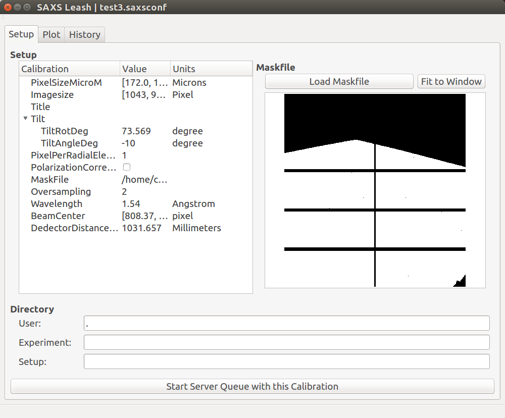

The Saxsdog Network¶
The network may consist of 3 different services. The “Saxsdog Server” does the image processing. The “Saxs Feeder” publishes new file Events and the “Saxs Leash” controls an configures the server.

The SAXSNetwork configuration¶
The Saxsdog Server and the Saxsleash have a common configuration file, which tells them how to connect with each other and which also includes a shared secret for authentication. If you want two computers to connect via the Saxsleash you need to have a copy of the file on each of them.
To create such a configuration, use the command:
$ saxsnetconf
It will ask for the Feeder URL and for the Saxsdog Server URL. Then it will generate a random secret and save the file in file in $Home/.saxdognetwork. You will have to copy the file to the other computers you need to allow to connect to your network. The secret must be the same on all of them.
{
"Server":"tcp://hostname:port",
"Feeder":"tcp://hostname:port",
"Secret":"Some large random string."
}
The authentication is done by hashing the request and the secret including a time stamp. The time stamp is checked if it lies within 900 seconds of the servers time.
The Saxsdog Server¶
The Saxdog Server is the program that is started on the processing computer (node). It may subscribe to a “new file” event service.
$ saxsdogserver --help
Usage: saxsdogserver [options] basedir
Options:
-h, --help show this help message and exit
-p port, --port=port Port to offer command service. Default is 7777.
-t THREADS, --threads=THREADS
Number of concurrent processes.
-f tcp://hostname:port, --feeder=tcp://hostname:port
Specify the URL of the new file event service (Saxsdog
Feeder)
-w, --watch Watch directory for changes, using file system events
recursively for all sub directories.
-o OUTDIR, --out=OUTDIR
Specify output directory. Default is './out'.
-i, --inplace Files are written, in place, in the directory of the
image.
The Saxs Leash¶
The Leash Program is a GUI to load calibrations into the Saxdog Server and monitor the processing of the data. It provides a calibration editor, as mask preview and basic data import from saxsconverter.
The main window has 3 tab cards. The first is for setting up the server, the second to review the currently processed data and the third for basic statistics. The command to launch it is.
leash
Saxs Leash Commandline¶
The “Saxs Leash” client can issue the commands for the Saxsdog Server.
$ saxsleash --help
Usage: saxsleash close|abort|new|get|plot|plotdata|readdir|stat [options] [arguments]
Options:
-h, --help show this help message and exit
-S tcp://HOSTNAME:PORT, --server=tcp://HOSTNAME:PORT
URL of "Saxsdog Server"
-s N, --skip=N plot: Skip first N points.
-k N, --clip=N plot: Clip last N points.
-x TYPE, --xaxsistype=TYPE
plot: Select type of X axis scale, might be
[linear|log|symlog]
-y TYPE, --yaxsistype=TYPE
plot: Select type of Y axis scale, might be
[linear|log|symlog]
Most of the command line options are about the plot command, but in order to visualize the processed data, one has to send the commands to setup a calibration.
New¶
$ saxsleash new cal.json data/AAA_integ.msk data/
The new command loads a calibration and starts the queue to receive new files. It requires 3 arguments:
- Calibration file. as in The Calibration File,
- mask file,
- directory where the image files are or are going to be.
- If there is a queue running, this command will abort the other one and replace it.
- One server can have only one queue at a time.
Plot¶
$ saxsleash plot
The plot command will grab the next image and show a plot of the result in a window. This command will be repeated until the user interrupts it with Ctrl-C.
Close¶
$ saxsleash close
Closes the queue. Which means, the server will process what is left in the queue but ignore all new files.
Abort¶
$ saxsleash abort
The abort command will close the queue and stop all data processing processes. It will only wait for each process to finish the picture they started before. The remaining pictures in the queue are ignored.
Read Dir¶
$ saxsleash readdir
This command will put all the images in the configured directory into the queue. This is useful to reprocess pictures.